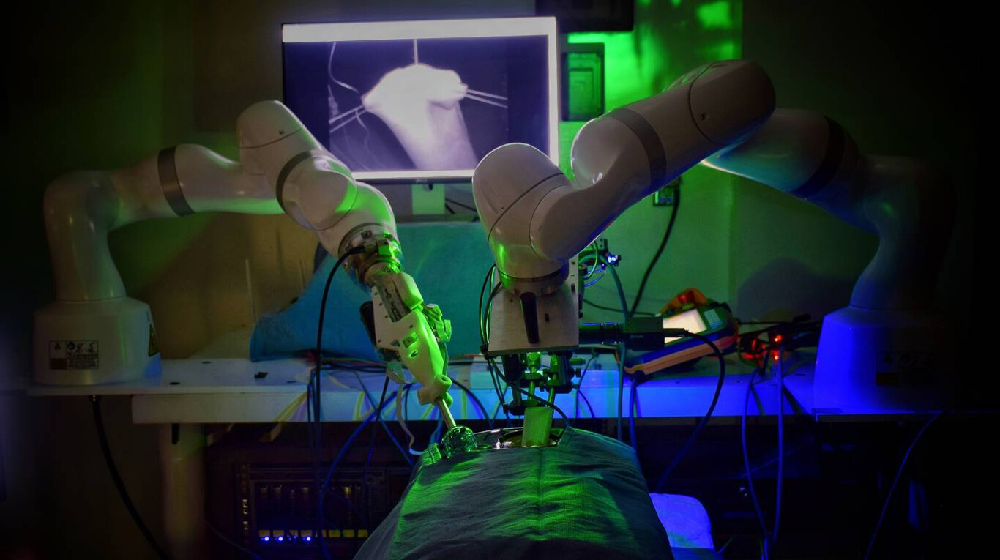

Robots de cuatro patas y cinturones inteligentes

Ayudan a las personas a superar las barreras cotidianas. En un mundo donde la tecnología avanza a pasos agigantados, los robots de cuatro patas se están convirtiendo en una herramienta esencial para ayudar a las personas con movilidad reducida. Ayudan a las personas a superar las barreras cotidianas. En un mundo donde la tecnología avanza a pasos agigantados, los robots de cuatro patas se están convirtiendo en una herramienta esencial para ayudar a las personas con movilidad reducida.Ayudan a las personas a superar las barreras cotidianas. En un mundo donde la tecnología avanza a pasos agigantados, los robots de cuatro patas se están convirtiendo en una herramienta esencial para ayudar a las personas con movilidad reducida. Descubre más aquí.
El robot AnyMal de ETH Zurich

Sube escaleras con sus pies. En un mundo donde la tecnología avanza a pasos agigantados, los robots de cuatro patas se están convirtiendo en una herramienta esencial para ayudar a las personas con movilidad reducida. Sube escaleras con sus pies. En un mundo donde la tecnología avanza a pasos agigantados, los robots de cuatro patas se están convirtiendo en una herramienta esencial para ayudar a las personas con movilidad reducida. Sube escaleras con sus pies. En un mundo donde la tecnología avanza a pasos agigantados, los robots de cuatro patas se están convirtiendo en una herramienta esencial para ayudar a las personas con movilidad reducida. Sube escaleras con sus pies. En un mundo donde la tecnología avanza a pasos agigantados, los robots de cuatro patas se están convirtiendo en una herramienta esencial para ayudar a las personas con movilidad reducida. Sube escaleras con sus pies. En un mundo donde la tecnología avanza a pasos agigantados, los robots de cuatro patas se están convirtiendo en una herramienta esencial para ayudar a las personas con movilidad reducida. Sube escaleras con sus pies. En un mundo donde la tecnología avanza a pasos agigantados, los robots de cuatro patas se están convirtiendo en una herramienta esencial para ayudar a las personas con movilidad reducida. Sube escaleras con sus pies. En un mundo donde la tecnología avanza a pasos agigantados, los robots de cuatro patas se están convirtiendo en una herramienta esencial para ayudar a las personas con movilidad reducida. Información.
Un pequeño convoy de robots
Realiza con éxito una cirugía endoscópica. En un mundo donde la tecnología avanza a pasos agigantados, los robots de cuatro patas se están convirtiendo en una herramienta esencial para ayudar a las personas con movilidad reducida. Realiza con éxito una cirugía endoscópica. En un mundo donde la tecnología avanza a pasos agigantados, los robots de cuatro patas se están convirtiendo en una herramienta esencial para ayudar a las personas con movilidad reducida. Realiza con éxito una cirugía endoscópica. En un mundo donde la tecnología avanza a pasos agigantados, los robots de cuatro patas se están convirtiendo en una herramienta esencial para ayudar a las personas con movilidad reducida. Realiza con éxito una cirugía endoscópica. En un mundo donde la tecnología avanza a pasos agigantados, los robots de cuatro patas se están convirtiendo en una herramienta esencial para ayudar a las personas con movilidad reducida. Realiza con éxito una cirugía endoscópica. En un mundo donde la tecnología avanza a pasos agigantados, los robots de cuatro patas se están convirtiendo en una herramienta esencial para ayudar a las personas con movilidad reducida. Realiza con éxito una cirugía endoscópica. En un mundo donde la tecnología avanza a pasos agigantados, los robots de cuatro patas se están convirtiendo en una herramienta esencial para ayudar a las personas con movilidad reducida. Realiza con éxito una cirugía endoscópica. En un mundo donde la tecnología avanza a pasos agigantados, los robots de cuatro patas se están convirtiendo en una herramienta esencial para ayudar a las personas con movilidad reducida. Información.
Entrega de alimentos desde robots

Realiza con éxito una cirugía endoscópica. En un mundo donde la tecnología avanza a pasos agigantados, los robots de cuatro patas se están convirtiendo en una herramienta esencial para ayudar a las personas con movilidad reducida. Realiza con éxito una cirugía endoscópica. En un mundo donde la tecnología avanza a pasos agigantados, los robots de cuatro patas se están convirtiendo en una herramienta esencial para ayudar a las personas con movilidad reducida. Realiza con éxito una cirugía endoscópica. En un mundo donde la tecnología avanza a pasos agigantados, los robots de cuatro patas se están convirtiendo en una herramienta esencial para ayudar a las personas con movilidad reducida. Realiza con éxito una cirugía endoscópica. En un mundo donde la tecnología avanza a pasos agigantados, los robots de cuatro patas se están convirtiendo en una herramienta esencial para ayudar a las personas con movilidad reducida. Realiza con éxito una cirugía endoscópica. En un mundo donde la tecnología avanza a pasos agigantados, los robots de cuatro patas se están convirtiendo en una herramienta esencial para ayudar a las personas con movilidad reducida. Realiza con éxito una cirugía endoscópica. En un mundo donde la tecnología avanza a pasos agigantados, los robots de cuatro patas se están convirtiendo en una herramienta esencial para ayudar a las personas con movilidad reducida. Información.
La "cura funcional" para la diabetes

Realiza con éxito una cirugía endoscópica. En un mundo donde la tecnología avanza a pasos agigantados, los robots de cuatro patas se están convirtiendo en una herramienta esencial para ayudar a las personas con movilidad reducida. Realiza con éxito una cirugía endoscópica. En un mundo donde la tecnología avanza a pasos agigantados, los robots de cuatro patas se están convirtiendo en una herramienta esencial para ayudar a las personas con movilidad reducida. Realiza con éxito una cirugía endoscópica. En un mundo donde la tecnología avanza a pasos agigantados, los robots de cuatro patas se están convirtiendo en una herramienta esencial para ayudar a las personas con movilidad reducida. Información.